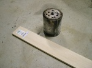
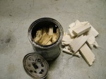
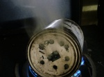
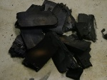
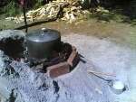
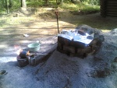
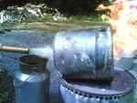

Charcoal
From PyroGuide
Formula: mixture with variable composition, generally of empirical formula C8H4O.
Description: Charcoal finds widespread use in pyrotechnics. Many types of charcoal exist, each with its own properties. It is a complex organic substance containing moisture, ash, carbon, hydrogen, oxygen and a variety of volatiles. All of these elements have a vital use in fireworks. Charcoal made from willow or grapevine is considered great for black powder, while hardwood charcoals e.g. pine charcoal are commonly used for spark effects. The particle size and the process used to make the charcoal also play an important role in the quality of the charcoal for a specific purpose. Very fine charcoal floats in air and is therefore sometimes referred to as 'airfloat'. Because charcoal is a very important chemical it is listed in the Beginners’ pages.
Hazards: Fine charcoal dust is easily breathed in, and a dust mask should be worn when working with it. Freshly prepared charcoal can be pyrophoric even when not powdered and it must be allowed to stand for a day at least before it is used in any compositions.
Sources: Barbeque briquettes are mixed with clay and are not suitable for making black powder. Charcoal can be purchased from supermarkets, BBQ supply stores and directly from online pyrotechnic chemical suppliers (ie. Skylighter). Charcoal can easily be prepared at home and a basic tutorial is outlined below.
See the Charcoal Suitability Table for additonal information on different kinds of charcoal.
Where to buy: You can buy High Quality Hardwood or Willow Charcoal Powder (C) from http://www.HobbyChemicals.co.uk
Contents |
[edit] Carbonisation process
[edit] Materials Wood Cooking container Heat source |
[edit] Method If using an old paint tin, make sure it's clean of any paint. Drill several 5mm holes into the lid, this will allow the gases to escape during cooking time. Break your wood/twigs into small pieces and pack them tightly into the paint tin and secure the lid. Do not use wood that is still wet (fresh green wood), as it takes a long time to dry inside the cooker and in the process a large amount of energy from the wood is lost driving off the water. Also, never use treated woods of any kind as these can contain arsenic and other nasty chemicals and you don't want to breathe these in as they are released during cooking time. |
|
 Now place your tin or cooker onto your heat source. As mentioned previously don't char your wood with too strong a heat source or it will cook too fast and burn too much of your woods fuel rendering it pretty much useless. As the walls of the paint tin are thin and the wood we are cooking is very soft, within a minute or two you will start to see smoke escaping out of the holes in the lid. This is called pyrolysis, the process of heating the wood in the absence of oxygen. Every few minutes or so give the paint tin a 1/4 of a turn to allow the wood inside to char evenly. |
|
 Depending on the amount, type and size of wood you are charring the cooking time will vary. Basically once you have given the container several rotations and the smoke escaping is slowing down then its time to remove from the heat. It is important to make sure you don't heat for too long. Good charcoal looks like the original wood / twigs but black with a brown tinge. It should not have split lengthwise and it should break easily with a sharp snap. The rings in the wood should still be visible. If the charred wood has turned a grey or white colour, its been cooked to long and should be discarded. In the case of balsa wood, let it stand for several hours to cool. With denser wood, allow it to cool for about 24 hours. You don't want to add an oxidiser and shove it inside a ball mill if there is a chance it may still be hot inside the charred wood. In the example only half of the balsa wood was added to the paint tin, and it yielded about 20 grams of very high quality charcoal. If making standard 75:15:10 black powder you can make about 123 grams of very hot and very fast burning black powder. Not bad for about 20 minutes work. Most people who make high quality black powders use it only in black powder rockets, cylindrical shell breaking and so on where performance is required. Standard black powder is used for other general purposes like dusting stars to assist in ignition at effect time.
|
|
   Medium-scale pine charcoal production may be carried out in a large steel cauldron or drum of at least 80 litres. The cauldron is equipped with a lid having a 20mm gas escape tube attached in the middle, using an angled tube connector. The container is filled with pine logs, lid is secured in place using aluminium foil tape, and the whole setup is mounted on a sand-bank, bottom of the cauldron heading up, and the gas escape tube in horizontal. The cauldron is rounded with masonry bricks, forming a combustion chamber between the bricks and the cauldron. The wood is then cooked for three hours, with the temperature held near 450'C. The wood tar extracted in the process is collected in a tin and the residual gas is burned. The escaping gas is carbon monoxide, and accordingly this process should occur outside to prevent poisoning. It is important that you let the gas escape for ten minutes before you try to ignite it; the air in the retort must be subsided by carbon monoxide to prevent an explosion. To get good pine charcoal, the heating must be stopped when the tar production is very minimal at the temperature of 450'C. The gas flame is observed small and 'dirty' at this point, tar seems to be 'watery'. The whole setup is allowed to cool at least one day before opening, otherwise the contents will be combusted. After you open the container, crush the contents with a large shovel, then shift out coal with a kitchen sieve, crush again, shift again, until all the coal is reduced into powder. The coal made this way is in a form of little needles, just perfect for long hang-time comet/star effects. In the comp mixing process, a little acetone should be added for dissolving resins left in the coal, to make a path for the oxidizer-water solution into coal. There are alternative methods for heating up the retort. The gas escaping, could be returned in a round burner heating the cauldron, wood would be dry-distilled on their own energy, the gas could be mixed with LPG gas. Electric heating is also possible. Be careful, do not get incinerated or electrocuted. The yield of wood tar is 1-5 litres, varying greatly with the resin content of the wood. Save the tar for other purposes. It is great for preserving wood but it is carcinogenic, so it must not be ingested. |
[edit] TheoryFrom U.S. Geological Survey Scientific Investigations Report 2004-5292: Aliphatic components are distilled off or converted to aromatic species early in the charring process. No porosity develops in samples with heating at 250’C, even though substantial material loss does occur. At 300’C, both pine and poplar woods develop porosity and reach maximum aromatic carbon percentage after 8h of charring, whenafter the percentage starts decreasing. At 350’C and above there will be development of porosity and rapid decrease in aromatic carbon percentage after the first hour of heating. The appearance of porosity does coincide with the loss of aromatic carbon, which indicates that porosity does not develop, until after the conversion of aliphatic to aromatic carbon has ceased and aromatic carbon is being removed. There is some indication that prolonged heating may cause fused-ring structure to coalesce and reduce porosity. Wood consists of roughly two thirds of cellulose and one third of lignin. In lignin, three types of phenylpropanoid moieties may exist: Parahydroxyphenyl, guaiacyl and syringyl types. Fifty percent of polymeric linkages in lignin are Beta-O-4 ether linkages of phenylpropanoids. Cleavage of these linkages results in substantial depolymerization of lignin. At 250'C lignin shows little degradation, but at 300'C and above much more alteration is apparent. From US patent H000072: Polynuclear aromatic hydrocarbons having no functional oxygen groups - like antracene, does not sustain combustion with potassium nitrate. Instead, phenolic compounds - which are aromatic compounds having functional oxygen groups, burns very fast. For example, compositions using phenolphthalein as a charcoal substitute burns in fact faster than ordinary black powder. But, phenolics which undergo hydroquinone to quinone type oxidation, are much less reactive than other phenolics notably in compositions that contain sulphur. It is assumed that sulphur turns hydroquinone/catechol moieties into some less reactive species. From The DFRC Method for Lignin Analysis. 2. Monomers from Isolated Lignins: Relative distribution ratios of parahydroxyphenyl(P), guaiacyl(G) and syringyl(S) species of lignin propanoids depend on the wood species. Ratio for pine P=0,03 : G=1 : S=0, for aspen P=0,02 : G=1 : S=1.64, for willow P=0 : G=1 : S=1.54 and for kenaf P=0 : G=1 : S=5.08. It is known, that pine charcoal is good for producing long lasting sparks whereas aspen or willow charcoal yields fast black powder. According to a source, the chinese use kenaf charcoal in their fast black powder. Charcoal prepared from wood with syringyl lignin, might account for fast burning rate. According to another source, 'sulphurless black powder burned faster than powder with sulphur'. This might indicate that hydroquinone to quinone type oxidation reactions take place in some charcoals. Before conclusions these claims have to be tested for proof.
[edit] VideoBalsa wood charcoal burn test - 1.3meg - 5 grams of balsa wood black powder burn rate test. The example demonstrates the extreme burning speed of balsa wood charcoal. |

{kind=link}
{kind=link}
{kind=link}
{kind=link}
{kind=link}
{kind=link}
{kind=link}
{kind=link}